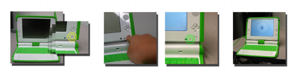
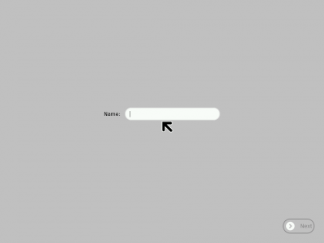
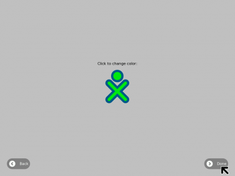
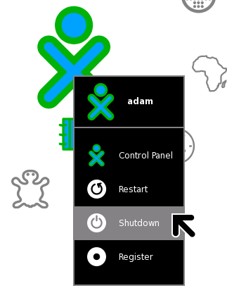

تشغيل جهاز XO

للقيام بتشغيل الجهاز، إضغط على زر التشغيل، الموجود في الجزء الأسفل من يمين الشاشة. جهاز XO بحاجة الى حوالي دقيقتين لبدأ التشغيل.
اذا كانت البطارية بحاجة للشحن، يتحول لون البطارية أسفل الشاشة الى الأحمر، قم بتركيب سلك محول الطاقة في يسار الجهازثم ركب محول الطاقة في مقبس الكهرباء اذا قمت برئية ضوء أحمر أو اذا لم يشتغل الجهاز.
اذا واجهتك مشاكل في تشغيل الجهاز، انظر الى فصل المشاكل في هذا الدليل لبعض الحلول الممكنة.
التشغيل لأول مرة
بعدما تقوم بالضغط على رر التشغيل و يقوم الجهاز بالشتغال لأول مرة، يقوم الجهاز بسؤالك عن اسمك. في المرة القادمة عند بدء تشغيله ، فإنه يتذكر اسمك ويذهب مباشرة إلى عرض الصفحة الرئيسية. في وقت لاحق يوم يمكنك تعلم كيفية تغيير لاسم مستعار من اختيارك.
- قم بكتابة اسمك.
 - بعد ادخال اسمك، أنقر التالي(إستعمل أصبعك لتحريك المؤشر فوق "التالي".ثم إضغط على زر "X" لتقوم بالنقر "click" كبديل لإستعمال الفأرة.)
- ثم سترى رمز "X" و "O". هذا الرمز يمثلك عند استخدامك للجهاز قم بتحريك المؤشر باستعمال أصبعك ثم إضغط على زر "X" لتغيير اللون الى اللون المناسب.
- بعد إختيار اللون أنقر على "موافق".

إغلاق الجهاز
- عند إنتهائك من استعمال الجهاز، إذهب الى شاشة المنزل بالغط على زر الذي يحتوي على نقطة واحدة في أعلى لوحة المفاتيح على اليسار.
- أنقر على زر XO وسط الشاشة لإظهار قائمة.
- ثم أنقر على أطفئ الجهاز في القائمة.

عليك دائما أن تقوم بغلق الجهاز بهذه الطريقة، لأن الجهاز يقوم بحفظ الملفات المفتوحة قبل إغلاقه.هذا يمكن الجهاز من استرجاع الأشياء عند تشغيله في المرة القادمة.لكن، إذا حصل مشكل ولم تستطع تحريك المؤشر أو النقر، يمكنك أن تقوم بإيقاف الجهاز بالضغط لبضع ثواني على زر التشغيل لإيقافه.